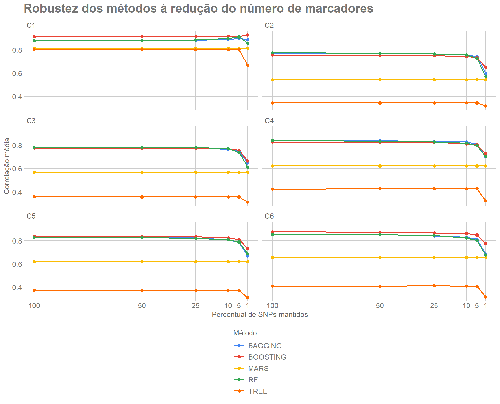

Last updated: 2026-09-10
Checks: 7 0
Knit directory:
Robustez-Predicao-Genomica-n-p/
This reproducible R Markdown analysis was created with workflowr (version 1.7.2). The Checks tab describes the reproducibility checks that were applied when the results were created. The Past versions tab lists the development history.
Great! Since the R Markdown file has been committed to the Git repository, you know the exact version of the code that produced these results.
Great job! The global environment was empty. Objects defined in the global environment can affect the analysis in your R Markdown file in unknown ways. For reproduciblity it’s best to always run the code in an empty environment.
The command set.seed(20260908) was run prior to running
the code in the R Markdown file. Setting a seed ensures that any results
that rely on randomness, e.g. subsampling or permutations, are
reproducible.
Great job! Recording the operating system, R version, and package versions is critical for reproducibility.
Nice! There were no cached chunks for this analysis, so you can be confident that you successfully produced the results during this run.
Great job! Using relative paths to the files within your workflowr project makes it easier to run your code on other machines.
Great! You are using Git for version control. Tracking code development and connecting the code version to the results is critical for reproducibility.
The results in this page were generated with repository version 34acf8c. See the Past versions tab to see a history of the changes made to the R Markdown and HTML files.
Note that you need to be careful to ensure that all relevant files for
the analysis have been committed to Git prior to generating the results
(you can use wflow_publish or
wflow_git_commit). workflowr only checks the R Markdown
file, but you know if there are other scripts or data files that it
depends on. Below is the status of the Git repository when the results
were generated:
Ignored files:
Ignored: .Rproj.user/
Ignored: .local/
Ignored: renv/library/
Ignored: renv/staging/
Note that any generated files, e.g. HTML, png, CSS, etc., are not included in this status report because it is ok for generated content to have uncommitted changes.
These are the previous versions of the repository in which changes were
made to the R Markdown
(analysis/03_aprendizado_maquina.Rmd) and HTML
(docs/03_aprendizado_maquina.html) files. If you’ve
configured a remote Git repository (see ?wflow_git_remote),
click on the hyperlinks in the table below to view the files as they
were in that past version.
| File | Version | Author | Date | Message |
|---|---|---|---|---|
| Rmd | d9e7edf | WevertonGomesCosta | 2026-09-10 | Convert machine learning module to tutorial format |
| html | d9e7edf | WevertonGomesCosta | 2026-09-10 | Convert machine learning module to tutorial format |
| Rmd | eb6c91a | WevertonGomesCosta | 2026-09-09 | Complete marker reduction robustness analysis |
| html | eb6c91a | WevertonGomesCosta | 2026-09-09 | Complete marker reduction robustness analysis |
| html | c8bee6d | WevertonGomesCosta | 2026-09-08 | Build site. |
| Rmd | ef0d40d | WevertonGomesCosta | 2026-09-08 | Define initial marker reduction design |
| html | 73e1863 | WevertonGomesCosta | 2026-09-08 | Build site. |
| Rmd | 7307330 | WevertonGomesCosta | 2026-09-08 | Configure initial tutorial structure and simulated data |
Este é o terceiro módulo do tutorial. O objetivo é mostrar como cinco
métodos de aprendizado de máquina são utilizados para
predizer valores genéticos e como seu desempenho muda quando o número de
marcadores, representado por p, é reduzido.
Os métodos avaliados são:
O desenho experimental foi fixado no Módulo 1. Nesta etapa:
O resultado científico oficial está armazenado em
output/aprendizado_maquina/module03_ml_results.rds e segue
o contrato M03-p-v1. Este tutorial não altera esse objeto.
Os ajustes computacionalmente pesados são mostrados como código didático
e podem ser executados pelo leitor, enquanto as tabelas e figuras
públicas são construídas diretamente a partir do resultado oficial já
auditado.
Antes de estudar cada algoritmo, é importante separar o que muda entre os métodos daquilo que permanece fixo no experimento.
A unidade básica da análise é
\[ \text{cenário} \times \text{método} \times \text{fold}. \]
Para cada uma dessas combinações, o procedimento é:
No Módulo 2, o GBLUP foi tratado de forma transdutiva em relação aos genótipos: a matriz genômica podia conter indivíduos de treinamento e teste, embora os fenótipos de teste permanecessem ocultos.
Os métodos de aprendizado de máquina deste módulo seguem outra lógica. O ajuste recebe apenas:
\[ \mathbf{X}_{\mathrm{treino}} \quad\text{e}\quad \mathbf{y}_{\mathrm{treino}}. \]
A matriz
\[ \mathbf{X}_{\mathrm{teste}} \]
é fornecida somente à etapa de predição. Portanto, os genótipos dos indivíduos de teste não influenciam o ajuste do modelo nem o ranking de importância.
O ranking é calculado uma única vez a partir do ajuste com todos os 4.010 SNPs. Os painéis menores utilizam os primeiros marcadores desse mesmo ranking:
\[ P_{1\%} \subset P_{5\%} \subset P_{10\%} \subset P_{25\%} \subset P_{50\%} \subset P_{100\%}. \]
O ranking não é compartilhado entre métodos. Para a mesma combinação de cenário e fold, MARS, Tree, Bagging, Random Forest e Boosting podem selecionar SNPs diferentes.
O Módulo 1 fornece dados, folds e níveis de redução de
p. O objeto oficial do M03 fornece o contrato científico,
os metadados e os resultados consolidados.
O código abaixo apenas carrega e valida esses objetos. Nenhum modelo é reajustado neste passo.
arquivo_m01 <-
"output/dados_desenho/desenho_analise.rds"
arquivo_m03 <-
"output/aprendizado_maquina/module03_ml_results.rds"
stopifnot(
file.exists(arquivo_m01),
file.exists(arquivo_m03)
)
dados <- readRDS(
arquivo_m01
)
resultado_m03 <- readRDS(
arquivo_m03
)
stopifnot(
identical(
dim(dados$genotipo),
c(1000L, 4010L)
),
identical(
dim(dados$fenotipo),
c(1000L, 6L)
),
identical(
dim(dados$valor_genetico),
c(1000L, 6L)
),
length(dados$folds) == 5L,
identical(
resultado_m03$versao,
"M03-p-v1"
),
identical(
resultado_m03$metodos,
c(
"MARS",
"TREE",
"BAGGING",
"RF",
"BOOSTING"
)
),
nrow(resultado_m03$resultados) == 900L,
nrow(resultado_m03$resumo) == 180L
)As verificações garantem que o tutorial está usando exatamente o desenho congelado no M01 e o resultado científico oficial do M03.
A tabela seguinte resume o papel de cada componente que será utilizado ao longo do módulo.
resumo_objetos <- data.frame(
Objeto = c(
"Fenótipos",
"Valores genéticos verdadeiros",
"Genótipos",
"Folds",
"Resultado oficial M03"
),
Estrutura = c(
paste(
dim(dados$fenotipo),
collapse = " x "
),
paste(
dim(dados$valor_genetico),
collapse = " x "
),
paste(
dim(dados$genotipo),
collapse = " x "
),
paste0(
length(dados$folds),
" folds"
),
paste0(
nrow(resultado_m03$resultados),
" resultados"
)
),
Uso = c(
"Resposta disponível somente no treinamento",
"Avaliação após a predição",
"Preditores dos modelos",
"Separação fixa entre treino e teste",
"Resultados científicos consolidados"
)
)
kableExtra::kbl(
resumo_objetos,
caption = "Objetos utilizados no módulo de aprendizado de máquina",
align = c(
"l",
"l",
"l"
)
) |>
kableExtra::kable_styling(
bootstrap_options = c(
"striped",
"hover",
"condensed",
"responsive"
),
full_width = FALSE
)| Objeto | Estrutura | Uso |
|---|---|---|
| Fenótipos | 1000 x 6 | Resposta disponível somente no treinamento |
| Valores genéticos verdadeiros | 1000 x 6 | Avaliação após a predição |
| Genótipos | 1000 x 4010 | Preditores dos modelos |
| Folds | 5 folds | Separação fixa entre treino e teste |
| Resultado oficial M03 | 900 resultados | Resultados científicos consolidados |
Os fenótipos e os valores genéticos verdadeiros possuem seis colunas,
uma para cada cenário. A matriz genotípica contém 4.010 SNPs. O objeto
resultado_m03 não é usado para treinar o exemplo didático:
ele preserva os resultados da execução científica já concluída.
Todos os métodos devem prever exatamente os mesmos indivíduos. O próximo bloco percorre os cinco folds e confirma o tamanho dos conjuntos de treinamento e teste.
resumo_folds <- data.frame(
Fold = seq_along(
dados$folds
),
Treinamento = integer(
length(dados$folds)
),
Teste = integer(
length(dados$folds)
)
)
for (
i in seq_along(
dados$folds
)
) {
resumo_folds$Treinamento[i] <-
length(
dados$folds[[i]]$treino
)
resumo_folds$Teste[i] <-
length(
dados$folds[[i]]$teste
)
}
stopifnot(
all(
resumo_folds$Treinamento == 800L
),
all(
resumo_folds$Teste == 200L
)
)
kableExtra::kbl(
resumo_folds,
caption = "Partição fixa utilizada pelos cinco métodos",
align = c(
"c",
"c",
"c"
)
) |>
kableExtra::kable_styling(
bootstrap_options = c(
"striped",
"hover",
"condensed",
"responsive"
),
full_width = FALSE
)| Fold | Treinamento | Teste |
|---|---|---|
| 1 | 800 | 200 |
| 2 | 800 | 200 |
| 3 | 800 | 200 |
| 4 | 800 | 200 |
| 5 | 800 | 200 |
Cada fold possui 800 indivíduos no treinamento e 200 no teste. Como a partição é comum aos métodos, diferenças posteriores não podem ser atribuídas ao uso de conjuntos de validação diferentes.
pOs tamanhos dos painéis já foram definidos no M01 por arredondamento half-up. Aqui apenas recuperamos esses valores.
niveis_p_m03 <- dados$niveis_p[
,
c(
"proporcao",
"percentual",
"n_marcadores"
)
]
stopifnot(
identical(
niveis_p_m03$n_marcadores,
c(
4010,
2005,
1003,
401,
201,
40
)
)
)
kableExtra::kbl(
niveis_p_m03,
caption = "Níveis de redução do número de marcadores",
col.names = c(
"Proporção mantida",
"Percentual",
"Número de SNPs"
),
align = c(
"c",
"c",
"c"
)
) |>
kableExtra::kable_styling(
bootstrap_options = c(
"striped",
"hover",
"condensed",
"responsive"
),
full_width = FALSE
)| Proporção mantida | Percentual | Número de SNPs |
|---|---|---|
| 1.00 | 100% | 4010 |
| 0.50 | 50% | 2005 |
| 0.25 | 25% | 1003 |
| 0.10 | 10% | 401 |
| 0.05 | 5% | 201 |
| 0.01 | 1% | 40 |
O painel de referência contém 4.010 SNPs. A redução mais extrema mantém 40 marcadores, correspondentes a aproximadamente 1% do painel original.
Para tornar o fluxo concreto, usamos a combinação C1 × Fold 1. Os ajustes mostrados nas próximas seções são deliberadamente mantidos fora do build do site, porque alguns métodos exigem centenas de árvores e milhares de preditores.
O bloco a seguir separa treinamento e teste e recupera as sementes registradas no resultado oficial para essa combinação.
cenario_exemplo <- "C1"
fold_exemplo <- 1L
treino <- dados$folds[[
fold_exemplo
]]$treino
teste <- dados$folds[[
fold_exemplo
]]$teste
X_treino <- dados$genotipo[
treino,
,
drop = FALSE
]
X_teste <- dados$genotipo[
teste,
,
drop = FALSE
]
y_treino <- dados$fenotipo[
treino,
cenario_exemplo
]
g_teste <- dados$valor_genetico[
teste,
cenario_exemplo
]
stopifnot(
nrow(X_treino) == 800L,
nrow(X_teste) == 200L,
ncol(X_treino) == 4010L,
length(y_treino) == 800L,
length(g_teste) == 200L
)
sementes_exemplo <-
resultado_m03$resultados[
resultado_m03$resultados$cenario ==
cenario_exemplo &
resultado_m03$resultados$fold ==
fold_exemplo &
resultado_m03$resultados$percentual_p ==
100,
c(
"metodo",
"seed"
)
]
sementes_exemplo <-
sementes_exemplo[
match(
resultado_m03$metodos,
sementes_exemplo$metodo
),
,
drop = FALSE
]
stopifnot(
nrow(sementes_exemplo) == 5L,
!anyNA(
sementes_exemplo$seed
)
)Os objetos X_treino, y_treino,
X_teste e g_teste deixam explícita a separação
de papéis: o modelo vê somente treinamento durante o ajuste; os valores
genéticos verdadeiros aparecem apenas na avaliação.
As sementes abaixo foram recuperadas do objeto oficial, em vez de serem inventadas no tutorial.
tabela_sementes <- sementes_exemplo
colnames(
tabela_sementes
) <- c(
"Método",
"Semente"
)
kableExtra::kbl(
tabela_sementes,
caption = "Sementes registradas para C1 × Fold 1 no painel completo",
align = c(
"l",
"c"
)
) |>
kableExtra::kable_styling(
bootstrap_options = c(
"striped",
"hover",
"condensed",
"responsive"
),
full_width = FALSE
)| Método | Semente | |
|---|---|---|
| 7 | MARS | 20362208 |
| 13 | TREE | 20362308 |
| 19 | BAGGING | 20362408 |
| 25 | RF | 20362508 |
| 31 | BOOSTING | 20362608 |
MARS e Tree são determinísticos no ajuste utilizado aqui, mas a semente ainda é necessária para o desempate do ranking. Bagging, Random Forest e Boosting usam a semente também durante o ajuste estocástico.
MARS significa Multivariate Adaptive Regression Splines. O modelo combina funções base construídas adaptativamente:
\[ \widehat y = \beta_0 + \sum_{m=1}^{M} \beta_m B_m(\mathbf{x}). \]
Neste projeto, degree = 1 impede interações entre
funções base. Os parâmetros nk e fast.k
permanecem nos valores padrão do pacote earth.
O código seguinte mostra o ajuste completo com 4.010 SNPs. Ele está
marcado com eval=FALSE para evitar que o site refaça uma
etapa computacional pesada durante cada build.
ajuste_mars <- earth::earth(
x = X_treino,
y = y_treino,
degree = 1L
)
pred_mars <- as.numeric(
predict(
ajuste_mars,
X_teste
)
)
stopifnot(
length(pred_mars) == 200L,
all(
is.finite(
pred_mars
)
)
)O ajuste recebe somente os 800 indivíduos de treinamento.
X_teste é utilizado apenas na chamada a
predict().
A importância do MARS é obtida com caret::varImp() e
value = "rss".
imp_mars_tabela <- caret::varImp(
ajuste_mars,
value = "rss"
)
imp_mars_tabela <- as.data.frame(
imp_mars_tabela
)Marcadores ausentes dessa tabela serão completados com importância zero antes do ranking.
Na auditoria científica congelada, o MARS apresentou exatamente 10 SNPs com importância positiva em cada uma das 30 combinações de cenário × fold. Esses SNPs permaneceram entre os 40 primeiros marcadores do ranking.
As predições foram numericamente idênticas entre 100% e 10% em 30/30 combinações e entre 100% e 1% também em 30/30. Essa invariância descreve a esparsidade do modelo ajustado; não implica superioridade preditiva em relação aos demais métodos.
A árvore de regressão particiona recursivamente o espaço dos preditores. Em cada nó, uma variável e um ponto de corte são escolhidos para criar grupos mais homogêneos em relação à resposta.
O método utilizado é rpart com
method = "anova".
O bloco seguinte constrói os data.frames de treinamento
e teste, ajusta a árvore e produz as 200 predições.
treino_tree <- data.frame(
y = y_treino,
X_treino,
check.names = FALSE
)
teste_tree <- data.frame(
X_teste,
check.names = FALSE
)
ajuste_tree <- rpart::rpart(
y ~ .,
data = treino_tree,
method = "anova"
)
pred_tree <- as.numeric(
predict(
ajuste_tree,
newdata = teste_tree
)
)
stopifnot(
length(pred_tree) == 200L,
all(
is.finite(
pred_tree
)
)
)Nenhuma busca ampla de hiperparâmetros é executada. A comparação usa uma configuração fixa, reproduzindo o protocolo científico congelado.
A importância da árvore também é obtida com o critério
rss.
imp_tree_tabela <- caret::varImp(
ajuste_tree,
value = "rss"
)
imp_tree_tabela <- as.data.frame(
imp_tree_tabela
)Marcadores omitidos da saída recebem zero antes da padronização.
A árvore apresentou entre 65 e 116 SNPs com importância positiva nas 30 combinações de cenário × fold.
Com 10% dos marcadores, as predições do painel completo foram reproduzidas em 21/30 combinações. Com 1%, nenhuma combinação reproduziu exatamente as predições do painel completo, isto é, 0/30.
Bagging combina várias árvores construídas a partir de amostras bootstrap. Se \(\widehat f_b(\mathbf{x})\) representa a predição da árvore \(b\), a predição do ensemble é
\[ \widehat f_{\mathrm{bag}}(\mathbf{x}) = \frac{1}{B} \sum_{b=1}^{B} \widehat f_b(\mathbf{x}). \]
Neste estudo são utilizadas 500 árvores e
\[ mtry=p, \]
de modo que todos os SNPs do painel corrente ficam disponíveis como candidatos em cada divisão.
A semente específica de Bagging é recuperada da tabela oficial antes do ajuste.
seed_bagging <-
sementes_exemplo$seed[
sementes_exemplo$metodo ==
"BAGGING"
]
set.seed(
seed_bagging
)
p_atual <- ncol(
X_treino
)
ajuste_bagging <-
randomForest::randomForest(
x = X_treino,
y = y_treino,
mtry = p_atual,
ntree = 500L,
importance = TRUE
)
pred_bagging <- as.numeric(
predict(
ajuste_bagging,
X_teste
)
)
stopifnot(
length(pred_bagging) == 200L,
all(
is.finite(
pred_bagging
)
)
)O valor de mtry muda automaticamente quando o painel é
reduzido, porque ele permanece igual ao número de SNPs presentes naquele
painel.
A importância de Bagging é obtida por
caret::varImp().
imp_bagging_tabela <- caret::varImp(
ajuste_bagging
)
imp_bagging_tabela <- as.data.frame(
imp_bagging_tabela
)Com randomForest de regressão e
importance = TRUE, o escore Overall utilizado
por caret::varImp.randomForest() corresponde ao
%IncMSE.
Valores negativos de %IncMSE são preservados. Somente
valores ausentes ou não finitos são substituídos por zero antes da
reescala 0–10.
Random Forest também utiliza várias árvores bootstrap, mas introduz aleatoriedade adicional ao limitar o conjunto de variáveis candidatas em cada divisão.
Neste projeto,
\[ mtry = \max \left( 1, \left\lfloor \frac{p}{3} \right\rfloor \right). \]
São usadas 500 árvores em todos os painéis.
O bloco seguinte reproduz exatamente a regra de mtry
utilizada no baseline.
seed_rf <-
sementes_exemplo$seed[
sementes_exemplo$metodo ==
"RF"
]
set.seed(
seed_rf
)
p_atual_rf <- ncol(
X_treino
)
mtry_rf <- max(
1L,
floor(
p_atual_rf / 3L
)
)
ajuste_rf <-
randomForest::randomForest(
x = X_treino,
y = y_treino,
mtry = mtry_rf,
ntree = 500L,
importance = TRUE
)
pred_rf <- as.numeric(
predict(
ajuste_rf,
X_teste
)
)
stopifnot(
length(pred_rf) == 200L,
all(
is.finite(
pred_rf
)
)
)A seleção aleatória de candidatos ocorre internamente em cada nó. Ela não deve ser confundida com o ranking externo usado posteriormente para construir os painéis reduzidos.
A importância do Random Forest segue a mesma convenção de Bagging.
imp_rf_tabela <- caret::varImp(
ajuste_rf
)
imp_rf_tabela <- as.data.frame(
imp_rf_tabela
)O %IncMSE é preservado em sua escala bruta, inclusive
quando assume valores negativos. A transformação para 0–10 ocorre apenas
depois de completar o vetor de todos os SNPs.
Boosting constrói árvores sequencialmente. Cada nova árvore busca reduzir o erro remanescente do conjunto anterior.
Uma representação simplificada é
\[ \widehat f_M(\mathbf{x}) = \sum_{m=1}^{M} \nu \widehat h_m(\mathbf{x}), \]
em que \(\nu\) é a taxa de aprendizado.
Neste estudo são utilizados:
distribution = "gaussian";n.trees = 500;interaction.depth = 2;shrinkage = 0.01.O código seguinte mostra a configuração científica congelada.
treino_boosting <- data.frame(
y = y_treino,
X_treino,
check.names = FALSE
)
teste_boosting <- data.frame(
X_teste,
check.names = FALSE
)
seed_boosting <-
sementes_exemplo$seed[
sementes_exemplo$metodo ==
"BOOSTING"
]
set.seed(
seed_boosting
)
ajuste_boosting <- gbm::gbm(
y ~ .,
data = treino_boosting,
distribution = "gaussian",
n.trees = 500L,
interaction.depth = 2L,
shrinkage = 0.01,
verbose = FALSE
)
pred_boosting <- as.numeric(
predict(
ajuste_boosting,
newdata = teste_boosting,
n.trees = 500L
)
)
stopifnot(
length(pred_boosting) == 200L,
all(
is.finite(
pred_boosting
)
)
)Assim como nos demais métodos, o conjunto de teste não participa do ajuste.
A importância é obtida com o mesmo número de árvores utilizado na predição.
imp_boosting_tabela <- caret::varImp(
ajuste_boosting,
numTrees = 500L
)
imp_boosting_tabela <- as.data.frame(
imp_boosting_tabela
)Marcadores ausentes da tabela de importância recebem zero antes da construção do ranking.
Os cinco métodos retornam objetos de importância com estruturas diferentes. O protocolo científico converte cada saída em um vetor nomeado contendo todos os SNPs do painel completo.
Para evitar esconder a lógica em uma função auxiliar, esta seção mostra cada operação explicitamente usando o Random Forest como exemplo. A mesma sequência é aplicada às saídas dos outros quatro métodos.
A tabela de importância do Random Forest é convertida para um vetor que começa com zero para todos os SNPs. Em seguida, os escores disponíveis são copiados para as posições correspondentes.
nomes_marcadores <- colnames(
X_treino
)
importancia_rf_bruta <- setNames(
rep(
0,
length(
nomes_marcadores
)
),
nomes_marcadores
)
if (
"Overall" %in%
colnames(
imp_rf_tabela
)
) {
valores_rf <-
imp_rf_tabela$Overall
} else {
colunas_numericas_rf <- which(
vapply(
imp_rf_tabela,
is.numeric,
logical(1)
)
)
stopifnot(
length(
colunas_numericas_rf
) > 0L
)
valores_rf <-
imp_rf_tabela[
[
colunas_numericas_rf[1L]
]
]
}
nomes_importancia_rf <- rownames(
imp_rf_tabela
)
comuns_rf <- intersect(
nomes_importancia_rf,
nomes_marcadores
)
if (
length(
comuns_rf
) > 0L
) {
importancia_rf_bruta[
comuns_rf
] <- valores_rf[
match(
comuns_rf,
nomes_importancia_rf
)
]
}
importancia_rf_bruta[
!is.finite(
importancia_rf_bruta
)
] <- 0
stopifnot(
length(
importancia_rf_bruta
) == 4010L,
identical(
names(
importancia_rf_bruta
),
nomes_marcadores
)
)Um SNP ausente de varImp() não é tratado como se
estivesse ausente do painel. Ele participou como variável candidata, mas
recebe importância zero para fins de ranking.
O uso de vapply() acima emprega a função base
is.numeric; nenhuma função auxiliar é criada pelo
tutorial.
Os escores brutos são transformados por uma reescala min–max:
\[ I_j^{(0-10)} = 10 \frac{ I_j-\min(I) }{ \max(I)-\min(I) }. \]
O código explícito é:
min_rf <- min(
importancia_rf_bruta
)
max_rf <- max(
importancia_rf_bruta
)
if (
max_rf > min_rf
) {
importancia_rf_0_10 <-
10 *
(
importancia_rf_bruta -
min_rf
) /
(
max_rf -
min_rf
)
} else {
importancia_rf_0_10 <- rep(
0,
length(
importancia_rf_bruta
)
)
names(
importancia_rf_0_10
) <- names(
importancia_rf_bruta
)
}
stopifnot(
all(
is.finite(
importancia_rf_0_10
)
),
min(
importancia_rf_0_10
) >= 0,
max(
importancia_rf_0_10
) <= 10
)A transformação é monotônica quando há variação nos escores, portanto não muda a ordem de valores distintos. No caso de Bagging e Random Forest, escores negativos brutos continuam influenciando corretamente a posição relativa antes da reescala.
Empates são frequentes, principalmente quando muitos SNPs recebem importância zero. Usar a ordem original das colunas como critério de desempate poderia favorecer artificialmente a posição física do marcador na matriz.
Por isso o protocolo cria uma chave pseudoaleatória determinada por semente.
set.seed(
seed_rf
)
ordem_aleatoria_rf <- sample(
seq_along(
importancia_rf_0_10
)
)
chave_desempate_rf <- integer(
length(
importancia_rf_0_10
)
)
chave_desempate_rf[
ordem_aleatoria_rf
] <- seq_along(
importancia_rf_0_10
)
ordem_rf <- order(
-importancia_rf_0_10,
chave_desempate_rf
)
ranking_rf <- data.frame(
marcador =
nomes_marcadores[
ordem_rf
],
marker_index =
ordem_rf,
importancia_bruta =
importancia_rf_bruta[
ordem_rf
],
importancia_0_10 =
importancia_rf_0_10[
ordem_rf
],
rank =
seq_along(
ordem_rf
),
tie_key =
chave_desempate_rf[
ordem_rf
],
stringsAsFactors = FALSE
)
stopifnot(
nrow(
ranking_rf
) == 4010L,
!anyDuplicated(
ranking_rf$marker_index
)
)A semente depende da combinação de cenário, método e fold. O desempate não usa fenótipo de teste, valor genético verdadeiro, posição dos QTL ou posição física do SNP como prioridade.
Uma vez criado o ranking, os painéis menores são obtidos pelas primeiras posições. O exemplo abaixo constrói explicitamente os seis painéis do Random Forest.
p_100 <- 4010L
p_50 <- 2005L
p_25 <- 1003L
p_10 <- 401L
p_5 <- 201L
p_1 <- 40L
painel_rf_100 <- seq_len(
p_100
)
painel_rf_50 <- ranking_rf$marker_index[
seq_len(
p_50
)
]
painel_rf_25 <- ranking_rf$marker_index[
seq_len(
p_25
)
]
painel_rf_10 <- ranking_rf$marker_index[
seq_len(
p_10
)
]
painel_rf_5 <- ranking_rf$marker_index[
seq_len(
p_5
)
]
painel_rf_1 <- ranking_rf$marker_index[
seq_len(
p_1
)
]
stopifnot(
all(
painel_rf_1 %in%
painel_rf_5
),
all(
painel_rf_5 %in%
painel_rf_10
),
all(
painel_rf_10 %in%
painel_rf_25
),
all(
painel_rf_25 %in%
painel_rf_50
)
)Para p = 100%, o pipeline científico registra
selected_marker_indices = NULL, indicando que nenhuma
subamostragem de colunas é necessária. Nos painéis reduzidos, o vetor
armazena explicitamente os índices na ordem do ranking.
A seleção de marcadores não encerra a análise. O modelo precisa ser reajustado fisicamente usando somente os SNPs do painel corrente.
A seguir, o Random Forest é reajustado no painel de 50%.
X_treino_rf_50 <- X_treino[
,
painel_rf_50,
drop = FALSE
]
X_teste_rf_50 <- X_teste[
,
painel_rf_50,
drop = FALSE
]
mtry_rf_50 <- max(
1L,
floor(
ncol(
X_treino_rf_50
) / 3L
)
)
set.seed(
seed_rf
)
ajuste_rf_50 <-
randomForest::randomForest(
x = X_treino_rf_50,
y = y_treino,
mtry = mtry_rf_50,
ntree = 500L,
importance = TRUE
)
pred_rf_50 <- as.numeric(
predict(
ajuste_rf_50,
X_teste_rf_50
)
)
stopifnot(
ncol(
X_treino_rf_50
) == 2005L,
length(
pred_rf_50
) == 200L
)O mesmo princípio vale para todos os métodos: depois da seleção, o algoritmo é reajustado usando a matriz reduzida. Não se reutilizam predições do painel completo.
A métrica principal é a correlação de Pearson entre o valor genético verdadeiro e a predição:
\[ r = \operatorname{cor} \left( \mathbf{g}, \widehat{\mathbf{g}} \right). \]
Também são registradas RMSE, MAE, viés, inclinação de calibração e \(R^2\) preditivo.
O \(R^2\) do pipeline é
\[ R^2 = 1- \frac{ \sum_i (g_i-\widehat g_i)^2 }{ \sum_i (g_i-\bar g)^2 }, \]
e não deve ser confundido com o quadrado da correlação.
O bloco seguinte mostra o cálculo explícito para o Random Forest completo.
r_rf <- cor(
g_teste,
pred_rf
)
rmse_rf <- sqrt(
mean(
(
g_teste -
pred_rf
)^2
)
)
mae_rf <- mean(
abs(
g_teste -
pred_rf
)
)
bias_rf <- mean(
pred_rf -
g_teste
)
slope_rf <- as.numeric(
coef(
lm(
g_teste ~
pred_rf
)
)[2L]
)
denominador_rf <- sum(
(
g_teste -
mean(
g_teste
)
)^2
)
r2_rf <-
1 -
sum(
(
g_teste -
pred_rf
)^2
) /
denominador_rf
metricas_rf <- data.frame(
r = r_rf,
RMSE = rmse_rf,
MAE = mae_rf,
Bias = bias_rf,
Slope = slope_rf,
R2 = r2_rf
)
metricas_rfEssas métricas utilizam o valor genético verdadeiro apenas depois que a predição foi produzida.
pDentro de cada cenário, método e fold, o painel de 100% é a referência.
Para a correlação:
\[ \Delta r_q = r_{100\%} - r_q. \]
Assim:
Para o RMSE:
\[ \Delta RMSE_q = RMSE_q - RMSE_{100\%}. \]
Valores positivos indicam aumento do erro.
O exemplo seguinte compara o Random Forest completo ao painel de 50%.
r_rf_50 <- cor(
g_teste,
pred_rf_50
)
rmse_rf_50 <- sqrt(
mean(
(
g_teste -
pred_rf_50
)^2
)
)
delta_r_rf_50 <-
r_rf -
r_rf_50
delta_rmse_rf_50 <-
rmse_rf_50 -
rmse_rf
comparacao_rf_50 <- data.frame(
Percentual = c(
"100%",
"50%"
),
Correlacao = c(
r_rf,
r_rf_50
),
RMSE = c(
rmse_rf,
rmse_rf_50
),
Delta_r = c(
0,
delta_r_rf_50
),
Delta_RMSE = c(
0,
delta_rmse_rf_50
)
)
comparacao_rf_50A comparação é sempre interna à mesma combinação de cenário, método e fold.
A execução científica possui
\[ 6 \times 5 \times 5 = 150 \]
combinações de cenário × método × fold. Cada combinação gera seis
resultados, um para cada nível de p, totalizando
\[ 150 \times 6 = 900 \]
resultados individuais.
O bloco abaixo apresenta a organização do processamento. Ele não é executado durante o build porque a análise completa envolve centenas de ajustes de modelos.
for (
cenario in colnames(
dados$fenotipo
)
) {
for (
metodo in c(
"MARS",
"TREE",
"BAGGING",
"RF",
"BOOSTING"
)
) {
for (
fold in seq_along(
dados$folds
)
) {
treino <-
dados$folds[[fold]]$treino
teste <-
dados$folds[[fold]]$teste
X_treino <-
dados$genotipo[
treino,
,
drop = FALSE
]
X_teste <-
dados$genotipo[
teste,
,
drop = FALSE
]
y_treino <-
dados$fenotipo[
treino,
cenario
]
g_teste <-
dados$valor_genetico[
teste,
cenario
]
# 1. recuperar a semente da tarefa
# 2. ajustar o método com os 4.010 SNPs
# 3. predizer os 200 indivíduos de teste
# 4. calcular a importância somente no treinamento
# 5. completar SNPs ausentes com zero
# 6. preservar importâncias brutas negativas quando existirem
# 7. reescalar a importância para 0--10
# 8. construir a chave de desempate determinística
# 9. ordenar os 4.010 SNPs
# 10. formar painéis de 50%, 25%, 10%, 5% e 1%
# 11. reajustar o mesmo método em cada painel
# 12. predizer sempre os mesmos 200 indivíduos
# 13. calcular as métricas
# 14. calcular delta-r e delta-RMSE em relação a 100%
}
}
}O bloco representa a sequência lógica do pipeline, enquanto as seções anteriores mostram as operações essenciais de forma executável para uma combinação didática.
As configurações não são reconstruídas manualmente nesta tabela. Elas
são extraídas diretamente do contrato oficial M03-p-v1.
configuracao_m03 <- data.frame(
Metodo = c(
"MARS",
"Tree",
"Bagging",
"Random Forest",
"Boosting"
),
Pacote = c(
resultado_m03$protocolo$configuracoes$MARS$pacote,
resultado_m03$protocolo$configuracoes$TREE$pacote,
resultado_m03$protocolo$configuracoes$BAGGING$pacote,
resultado_m03$protocolo$configuracoes$RF$pacote,
resultado_m03$protocolo$configuracoes$BOOSTING$pacote
),
Configuracao = c(
paste0(
"degree = ",
resultado_m03$protocolo$configuracoes$MARS$degree,
"; nk e fast.k = padrão do earth"
),
paste0(
"method = ",
resultado_m03$protocolo$configuracoes$TREE$method
),
paste0(
"ntree = ",
resultado_m03$protocolo$configuracoes$BAGGING$ntree,
"; mtry = ",
resultado_m03$protocolo$configuracoes$BAGGING$mtry
),
paste0(
"ntree = ",
resultado_m03$protocolo$configuracoes$RF$ntree,
"; mtry = ",
resultado_m03$protocolo$configuracoes$RF$mtry
),
paste0(
"n.trees = ",
resultado_m03$protocolo$configuracoes$BOOSTING$n_trees,
"; depth = ",
resultado_m03$protocolo$configuracoes$BOOSTING$interaction_depth,
"; shrinkage = ",
resultado_m03$protocolo$configuracoes$BOOSTING$shrinkage
)
),
Importancia = c(
resultado_m03$protocolo$configuracoes$MARS$importancia,
resultado_m03$protocolo$configuracoes$TREE$importancia,
resultado_m03$protocolo$configuracoes$BAGGING$importancia,
resultado_m03$protocolo$configuracoes$RF$importancia,
resultado_m03$protocolo$configuracoes$BOOSTING$importancia
)
)
kableExtra::kbl(
configuracao_m03,
caption = "Configuração científica dos cinco métodos",
col.names = c(
"Método",
"Pacote",
"Configuração",
"Importância"
),
align = c(
"l",
"l",
"l",
"l"
)
) |>
kableExtra::kable_styling(
bootstrap_options = c(
"striped",
"hover",
"condensed",
"responsive"
),
full_width = FALSE
) |>
kableExtra::scroll_box(
width = "100%"
)| Método | Pacote | Configuração | Importância |
|---|---|---|---|
| MARS | earth | degree = 1; nk e fast.k = padrão do earth | caret::varImp(…, value = ‘rss’) |
| Tree | rpart | method = anova | caret::varImp(…, value = ‘rss’) |
| Bagging | randomForest | ntree = 500; mtry = p | %IncMSE via caret::varImp.randomForest |
| Random Forest | randomForest | ntree = 500; mtry = max(1, floor(p/3)) | %IncMSE via caret::varImp.randomForest |
| Boosting | gbm | n.trees = 500; depth = 2; shrinkage = 0.01 | caret::varImp(…, numTrees = 500) |
A tabela confirma que não foi realizada busca ampla de hiperparâmetros. Cada método mantém uma configuração fixa e transparente, adequada ao objetivo de comparar robustez sob redução de marcadores.
M03-p-v1O tutorial deve apenas consumir o objeto científico congelado. O bloco seguinte verifica novamente as regras centrais do protocolo.
stopifnot(
isTRUE(
resultado_m03$protocolo$ranking_somente_treinamento
),
isTRUE(
resultado_m03$protocolo$paineis_aninhados
),
isTRUE(
resultado_m03$protocolo$importancia_padronizada_0_10
),
isTRUE(
resultado_m03$protocolo$desempate_deterministico
),
isTRUE(
resultado_m03$protocolo$valor_genetico_somente_avaliacao
),
identical(
resultado_m03$protocolo$metrica_principal,
"r_true_g"
),
identical(
resultado_m03$protocolo$delta_r,
"r_100 - r_q"
),
identical(
resultado_m03$protocolo$delta_rmse,
"RMSE_q - RMSE_100"
)
)
protocolo_publico <- data.frame(
Regra = c(
"Ranking",
"Painéis",
"Importância",
"Desempate",
"Valor genético verdadeiro",
"Métrica principal",
"Delta-r",
"Delta-RMSE"
),
Definicao = c(
"Calculado somente com treinamento",
"Aninhados dentro de cenário × método × fold",
"Reescalada para 0–10",
"Pseudoaleatório e determinístico por semente",
"Utilizado somente na avaliação",
resultado_m03$protocolo$metrica_principal,
resultado_m03$protocolo$delta_r,
resultado_m03$protocolo$delta_rmse
)
)
kableExtra::kbl(
protocolo_publico,
caption = "Contrato científico congelado do M03",
col.names = c(
"Regra",
"Definição"
),
align = c(
"l",
"l"
)
) |>
kableExtra::kable_styling(
bootstrap_options = c(
"striped",
"hover",
"condensed",
"responsive"
),
full_width = FALSE
)| Regra | Definição |
|---|---|
| Ranking | Calculado somente com treinamento |
| Painéis | Aninhados dentro de cenário × método × fold |
| Importância | Reescalada para 0–10 |
| Desempate | Pseudoaleatório e determinístico por semente |
| Valor genético verdadeiro | Utilizado somente na avaliação |
| Métrica principal | r_true_g |
| Delta-r | r_100 - r_q |
| Delta-RMSE | RMSE_q - RMSE_100 |
Essas regras impedem vazamento de informação do conjunto de teste e
garantem que a comparação entre níveis de p use sempre o
mesmo ranking dentro de cada combinação.
A estrutura esperada é conferida diretamente no objeto.
dimensoes_m03 <- data.frame(
Componente = c(
"Cenários",
"Folds",
"Métodos",
"Níveis de p",
"Resultados individuais",
"Resumos"
),
Valor = c(
resultado_m03$dimensoes$cenarios,
resultado_m03$dimensoes$folds,
resultado_m03$dimensoes$metodos,
resultado_m03$dimensoes$niveis_p,
nrow(
resultado_m03$resultados
),
nrow(
resultado_m03$resumo
)
)
)
stopifnot(
identical(
dimensoes_m03$Valor,
c(
6L,
5L,
5L,
6L,
900L,
180L
)
)
)
kableExtra::kbl(
dimensoes_m03,
caption = "Dimensões do resultado oficial de aprendizado de máquina",
align = c(
"l",
"c"
)
) |>
kableExtra::kable_styling(
bootstrap_options = c(
"striped",
"hover",
"condensed",
"responsive"
),
full_width = FALSE
)| Componente | Valor |
|---|---|
| Cenários | 6 |
| Folds | 5 |
| Métodos | 5 |
| Níveis de p | 6 |
| Resultados individuais | 900 |
| Resumos | 180 |
Os 900 resultados correspondem exatamente a \(6 \times 5 \times 5 \times 6\). Os 180
resumos correspondem a uma linha para cada combinação de cenário ×
método × nível de p.
As tabelas seguintes são derivadas diretamente de
resultado_m03$resumo. Nenhum valor científico é digitado
manualmente no Rmd.
Para tornar a comparação legível, selecionamos três níveis
representativos de p: painel completo, redução
intermediária a 10% e condição extrema de 1%.
resultados_principais <-
resultado_m03$resumo[
resultado_m03$resumo$percentual_p %in%
c(
100,
10,
1
),
c(
"cenario",
"metodo",
"percentual_p",
"media_r",
"media_rmse",
"media_delta_r",
"media_delta_rmse"
)
]
resultados_principais <-
resultados_principais[
order(
resultados_principais$cenario,
resultados_principais$metodo,
-resultados_principais$percentual_p
),
,
drop = FALSE
]
kableExtra::kbl(
resultados_principais,
caption = "Desempenho médio dos métodos em 100%, 10% e 1% dos SNPs",
digits = 4,
col.names = c(
"Cenário",
"Método",
"% SNPs",
"r médio",
"RMSE médio",
"Δr médio",
"ΔRMSE médio"
),
align = c(
"c",
"l",
"c",
"c",
"c",
"c",
"c"
)
) |>
kableExtra::kable_styling(
bootstrap_options = c(
"striped",
"hover",
"condensed",
"responsive"
),
full_width = FALSE
) |>
kableExtra::scroll_box(
width = "100%",
height = "500px"
)| Cenário | Método | % SNPs | r médio | RMSE médio | Δr médio | ΔRMSE médio | |
|---|---|---|---|---|---|---|---|
| 1 | C1 | BAGGING | 100 | 0.8792 | 0.9500 | 0.0000 | 0.0000 |
| 4 | C1 | BAGGING | 10 | 0.8877 | 0.9085 | -0.0086 | -0.0415 |
| 6 | C1 | BAGGING | 1 | 0.8861 | 0.9015 | -0.0069 | -0.0485 |
| 7 | C1 | BOOSTING | 100 | 0.9130 | 0.9646 | 0.0000 | 0.0000 |
| 10 | C1 | BOOSTING | 10 | 0.9153 | 0.9499 | -0.0022 | -0.0147 |
| 12 | C1 | BOOSTING | 1 | 0.9277 | 0.8635 | -0.0146 | -0.1011 |
| 19 | C1 | MARS | 100 | 0.8154 | 1.1265 | 0.0000 | 0.0000 |
| 22 | C1 | MARS | 10 | 0.8154 | 1.1265 | 0.0000 | 0.0000 |
| 24 | C1 | MARS | 1 | 0.8154 | 1.1265 | 0.0000 | 0.0000 |
| 25 | C1 | RF | 100 | 0.8789 | 0.9543 | 0.0000 | 0.0000 |
| 28 | C1 | RF | 10 | 0.8976 | 0.8694 | -0.0187 | -0.0849 |
| 30 | C1 | RF | 1 | 0.8566 | 1.0074 | 0.0224 | 0.0531 |
| 31 | C1 | TREE | 100 | 0.8010 | 1.1777 | 0.0000 | 0.0000 |
| 34 | C1 | TREE | 10 | 0.8003 | 1.1795 | 0.0007 | 0.0018 |
| 36 | C1 | TREE | 1 | 0.6669 | 1.4446 | 0.1341 | 0.2670 |
| 37 | C2 | BAGGING | 100 | 0.7695 | 0.6806 | 0.0000 | 0.0000 |
| 40 | C2 | BAGGING | 10 | 0.7566 | 0.6784 | 0.0129 | -0.0022 |
| 42 | C2 | BAGGING | 1 | 0.5968 | 0.7686 | 0.1727 | 0.0880 |
| 43 | C2 | BOOSTING | 100 | 0.7555 | 0.6960 | 0.0000 | 0.0000 |
| 46 | C2 | BOOSTING | 10 | 0.7432 | 0.7034 | 0.0124 | 0.0074 |
| 48 | C2 | BOOSTING | 1 | 0.6515 | 0.7471 | 0.1040 | 0.0511 |
| 55 | C2 | MARS | 100 | 0.5427 | 0.8150 | 0.0000 | 0.0000 |
| 58 | C2 | MARS | 10 | 0.5427 | 0.8150 | 0.0000 | 0.0000 |
| 60 | C2 | MARS | 1 | 0.5427 | 0.8150 | 0.0000 | 0.0000 |
| 61 | C2 | RF | 100 | 0.7736 | 0.6775 | 0.0000 | 0.0000 |
| 64 | C2 | RF | 10 | 0.7544 | 0.6774 | 0.0193 | -0.0001 |
| 66 | C2 | RF | 1 | 0.5719 | 0.7829 | 0.2018 | 0.1054 |
| 67 | C2 | TREE | 100 | 0.3424 | 0.9595 | 0.0000 | 0.0000 |
| 70 | C2 | TREE | 10 | 0.3449 | 0.9607 | -0.0025 | 0.0012 |
| 72 | C2 | TREE | 1 | 0.3165 | 0.9322 | 0.0259 | -0.0274 |
| 73 | C3 | BAGGING | 100 | 0.7810 | 0.4794 | 0.0000 | 0.0000 |
| 76 | C3 | BAGGING | 10 | 0.7665 | 0.4793 | 0.0144 | 0.0000 |
| 78 | C3 | BAGGING | 1 | 0.6467 | 0.5328 | 0.1342 | 0.0534 |
| 79 | C3 | BOOSTING | 100 | 0.7759 | 0.4840 | 0.0000 | 0.0000 |
| 82 | C3 | BOOSTING | 10 | 0.7705 | 0.4852 | 0.0054 | 0.0013 |
| 84 | C3 | BOOSTING | 1 | 0.6646 | 0.5313 | 0.1113 | 0.0473 |
| 91 | C3 | MARS | 100 | 0.5688 | 0.5937 | 0.0000 | 0.0000 |
| 94 | C3 | MARS | 10 | 0.5688 | 0.5937 | 0.0000 | 0.0000 |
| 96 | C3 | MARS | 1 | 0.5688 | 0.5937 | 0.0000 | 0.0000 |
| 97 | C3 | RF | 100 | 0.7822 | 0.4793 | 0.0000 | 0.0000 |
| 100 | C3 | RF | 10 | 0.7711 | 0.4771 | 0.0111 | -0.0022 |
| 102 | C3 | RF | 1 | 0.6114 | 0.5536 | 0.1708 | 0.0743 |
| 103 | C3 | TREE | 100 | 0.3581 | 0.7252 | 0.0000 | 0.0000 |
| 106 | C3 | TREE | 10 | 0.3563 | 0.7269 | 0.0018 | 0.0017 |
| 108 | C3 | TREE | 1 | 0.3121 | 0.6886 | 0.0460 | -0.0366 |
| 109 | C4 | BAGGING | 100 | 0.8362 | 0.3663 | 0.0000 | 0.0000 |
| 112 | C4 | BAGGING | 10 | 0.8285 | 0.3630 | 0.0076 | -0.0033 |
| 114 | C4 | BAGGING | 1 | 0.7003 | 0.4209 | 0.1358 | 0.0546 |
| 115 | C4 | BOOSTING | 100 | 0.8267 | 0.3722 | 0.0000 | 0.0000 |
| 118 | C4 | BOOSTING | 10 | 0.8111 | 0.3782 | 0.0156 | 0.0060 |
| 120 | C4 | BOOSTING | 1 | 0.7261 | 0.4136 | 0.1007 | 0.0414 |
| 127 | C4 | MARS | 100 | 0.6229 | 0.4795 | 0.0000 | 0.0000 |
| 130 | C4 | MARS | 10 | 0.6229 | 0.4795 | 0.0000 | 0.0000 |
| 132 | C4 | MARS | 1 | 0.6229 | 0.4795 | 0.0000 | 0.0000 |
| 133 | C4 | RF | 100 | 0.8399 | 0.3650 | 0.0000 | 0.0000 |
| 136 | C4 | RF | 10 | 0.8182 | 0.3698 | 0.0217 | 0.0049 |
| 138 | C4 | RF | 1 | 0.7018 | 0.4210 | 0.1381 | 0.0561 |
| 139 | C4 | TREE | 100 | 0.4222 | 0.6137 | 0.0000 | 0.0000 |
| 142 | C4 | TREE | 10 | 0.4263 | 0.6116 | -0.0041 | -0.0021 |
| 144 | C4 | TREE | 1 | 0.3217 | 0.5742 | 0.1005 | -0.0395 |
| 145 | C5 | BAGGING | 100 | 0.8324 | 0.2872 | 0.0000 | 0.0000 |
| 148 | C5 | BAGGING | 10 | 0.8073 | 0.2917 | 0.0251 | 0.0044 |
| 150 | C5 | BAGGING | 1 | 0.6676 | 0.3531 | 0.1648 | 0.0659 |
| 151 | C5 | BOOSTING | 100 | 0.8364 | 0.2790 | 0.0000 | 0.0000 |
| 154 | C5 | BOOSTING | 10 | 0.8220 | 0.2836 | 0.0144 | 0.0046 |
| 156 | C5 | BOOSTING | 1 | 0.7301 | 0.3240 | 0.1063 | 0.0450 |
| 163 | C5 | MARS | 100 | 0.6177 | 0.4003 | 0.0000 | 0.0000 |
| 166 | C5 | MARS | 10 | 0.6177 | 0.4003 | 0.0000 | 0.0000 |
| 168 | C5 | MARS | 1 | 0.6177 | 0.4003 | 0.0000 | 0.0000 |
| 169 | C5 | RF | 100 | 0.8276 | 0.2879 | 0.0000 | 0.0000 |
| 172 | C5 | RF | 10 | 0.8064 | 0.2939 | 0.0212 | 0.0060 |
| 174 | C5 | RF | 1 | 0.6867 | 0.3432 | 0.1410 | 0.0553 |
| 175 | C5 | TREE | 100 | 0.3735 | 0.5375 | 0.0000 | 0.0000 |
| 178 | C5 | TREE | 10 | 0.3726 | 0.5377 | 0.0008 | 0.0002 |
| 180 | C5 | TREE | 1 | 0.3112 | 0.4691 | 0.0623 | -0.0684 |
| 181 | C6 | BAGGING | 100 | 0.8525 | 0.2353 | 0.0000 | 0.0000 |
| 184 | C6 | BAGGING | 10 | 0.8292 | 0.2404 | 0.0233 | 0.0051 |
| 186 | C6 | BAGGING | 1 | 0.6858 | 0.3021 | 0.1667 | 0.0669 |
| 187 | C6 | BOOSTING | 100 | 0.8754 | 0.2252 | 0.0000 | 0.0000 |
| 190 | C6 | BOOSTING | 10 | 0.8599 | 0.2298 | 0.0155 | 0.0047 |
| 192 | C6 | BOOSTING | 1 | 0.7732 | 0.2648 | 0.1022 | 0.0397 |
| 199 | C6 | MARS | 100 | 0.6555 | 0.3363 | 0.0000 | 0.0000 |
| 202 | C6 | MARS | 10 | 0.6555 | 0.3363 | 0.0000 | 0.0000 |
| 204 | C6 | MARS | 1 | 0.6555 | 0.3363 | 0.0000 | 0.0000 |
| 205 | C6 | RF | 100 | 0.8531 | 0.2354 | 0.0000 | 0.0000 |
| 208 | C6 | RF | 10 | 0.8213 | 0.2427 | 0.0318 | 0.0074 |
| 210 | C6 | RF | 1 | 0.6752 | 0.3069 | 0.1778 | 0.0716 |
| 211 | C6 | TREE | 100 | 0.4084 | 0.4425 | 0.0000 | 0.0000 |
| 214 | C6 | TREE | 10 | 0.4084 | 0.4425 | 0.0000 | 0.0000 |
| 216 | C6 | TREE | 1 | 0.3169 | 0.4070 | 0.0915 | -0.0355 |
A tabela deve ser interpretada em duas dimensões. \(r\) médio descreve a capacidade preditiva
absoluta, enquanto Δr médio descreve a perda ou ganho
relativo ao painel completo do mesmo método, cenário e fold. Um método
pode ser estável à redução de p sem ser o melhor em
capacidade preditiva absoluta.
Para uma visão compacta, calculamos a média descritiva entre os seis
cenários em cada combinação de método e nível de p.
resumo_metodos <- aggregate(
cbind(
media_r,
media_rmse,
media_delta_r,
media_delta_rmse
) ~
metodo +
percentual_p,
data =
resultado_m03$resumo,
FUN = mean
)
resumo_metodos <-
resumo_metodos[
order(
resumo_metodos$metodo,
-resumo_metodos$percentual_p
),
,
drop = FALSE
]
kableExtra::kbl(
resumo_metodos,
caption = "Resumo descritivo médio entre os seis cenários",
digits = 4,
col.names = c(
"Método",
"% SNPs",
"r médio",
"RMSE médio",
"Δr médio",
"ΔRMSE médio"
),
align = c(
"l",
"c",
"c",
"c",
"c",
"c"
)
) |>
kableExtra::kable_styling(
bootstrap_options = c(
"striped",
"hover",
"condensed",
"responsive"
),
full_width = FALSE
) |>
kableExtra::scroll_box(
width = "100%",
height = "450px"
)| Método | % SNPs | r médio | RMSE médio | Δr médio | ΔRMSE médio | |
|---|---|---|---|---|---|---|
| 26 | BAGGING | 100 | 0.8251 | 0.4998 | 0.0000 | 0.0000 |
| 21 | BAGGING | 50 | 0.8254 | 0.4977 | -0.0003 | -0.0021 |
| 16 | BAGGING | 25 | 0.8195 | 0.4974 | 0.0056 | -0.0024 |
| 11 | BAGGING | 10 | 0.8126 | 0.4936 | 0.0125 | -0.0062 |
| 6 | BAGGING | 5 | 0.7984 | 0.4918 | 0.0268 | -0.0080 |
| 1 | BAGGING | 1 | 0.6972 | 0.5465 | 0.1279 | 0.0467 |
| 27 | BOOSTING | 100 | 0.8305 | 0.5035 | 0.0000 | 0.0000 |
| 22 | BOOSTING | 50 | 0.8281 | 0.5048 | 0.0024 | 0.0013 |
| 17 | BOOSTING | 25 | 0.8263 | 0.5045 | 0.0042 | 0.0010 |
| 12 | BOOSTING | 10 | 0.8203 | 0.5050 | 0.0102 | 0.0015 |
| 7 | BOOSTING | 5 | 0.8112 | 0.5083 | 0.0193 | 0.0048 |
| 2 | BOOSTING | 1 | 0.7455 | 0.5240 | 0.0850 | 0.0206 |
| 28 | MARS | 100 | 0.6372 | 0.6252 | 0.0000 | 0.0000 |
| 23 | MARS | 50 | 0.6372 | 0.6252 | 0.0000 | 0.0000 |
| 18 | MARS | 25 | 0.6372 | 0.6252 | 0.0000 | 0.0000 |
| 13 | MARS | 10 | 0.6372 | 0.6252 | 0.0000 | 0.0000 |
| 8 | MARS | 5 | 0.6372 | 0.6252 | 0.0000 | 0.0000 |
| 3 | MARS | 1 | 0.6372 | 0.6252 | 0.0000 | 0.0000 |
| 29 | RF | 100 | 0.8259 | 0.4999 | 0.0000 | 0.0000 |
| 24 | RF | 50 | 0.8237 | 0.4977 | 0.0022 | -0.0022 |
| 19 | RF | 25 | 0.8201 | 0.4943 | 0.0058 | -0.0056 |
| 14 | RF | 10 | 0.8115 | 0.4884 | 0.0144 | -0.0115 |
| 9 | RF | 5 | 0.7936 | 0.4876 | 0.0323 | -0.0123 |
| 4 | RF | 1 | 0.6839 | 0.5692 | 0.1420 | 0.0693 |
| 30 | TREE | 100 | 0.4509 | 0.7427 | 0.0000 | 0.0000 |
| 25 | TREE | 50 | 0.4512 | 0.7429 | -0.0002 | 0.0002 |
| 20 | TREE | 25 | 0.4520 | 0.7429 | -0.0011 | 0.0002 |
| 15 | TREE | 10 | 0.4515 | 0.7432 | -0.0005 | 0.0005 |
| 10 | TREE | 5 | 0.4512 | 0.7429 | -0.0002 | 0.0002 |
| 5 | TREE | 1 | 0.3742 | 0.7526 | 0.0767 | 0.0099 |
Essa média entre cenários é apenas uma síntese descritiva. Os cenários diferem simultaneamente em número de QTL e herdabilidade e, por isso, a tabela não deve ser usada para atribuir causalmente diferenças a uma única característica da arquitetura genética.
A figura apresenta a correlação média nos cinco folds para cada
cenário, método e nível de p. As cores utilizam a paleta
GDocs adotada no restante do tutorial.
if (!requireNamespace(
"ggplot2",
quietly = TRUE
)) {
stop(
"Instale o pacote ggplot2 para gerar as figuras do tutorial."
)
}
if (!requireNamespace(
"ggthemes",
quietly = TRUE
)) {
stop(
"Instale o pacote ggthemes para usar o padrão gráfico GDocs."
)
}
dados_figura_ml <-
resultado_m03$resumo
dados_figura_ml$percentual_p <-
as.numeric(
dados_figura_ml$percentual_p
)
figura_correlacao_ml <-
ggplot2::ggplot(
dados_figura_ml,
ggplot2::aes(
x = percentual_p,
y = media_r,
color = metodo,
group = metodo
)
) +
ggplot2::geom_line(
linewidth = 0.8
) +
ggplot2::geom_point(
size = 2
) +
ggplot2::facet_wrap(
~ cenario,
ncol = 2
) +
ggplot2::scale_x_reverse(
breaks = c(
100,
50,
25,
10,
5,
1
)
) +
ggthemes::scale_color_gdocs(
name = "Método"
) +
ggplot2::labs(
title = "Robustez dos métodos à redução do número de marcadores",
x = "Percentual de SNPs mantidos",
y = "Correlação média"
) +
ggthemes::theme_gdocs(
base_size = 11
) +
ggplot2::theme(
plot.title = ggplot2::element_text(
face = "bold"
),
legend.position = "bottom"
)
figura_correlacao_ml
Correlação média entre valor genético verdadeiro e predição para os cinco métodos ao reduzir o número de SNPs.
| Version | Author | Date |
|---|---|---|
| d9e7edf | WevertonGomesCosta | 2026-09-10 |
A figura permite observar simultaneamente nível de desempenho e
estabilidade. Curvas mais altas indicam maior correlação, enquanto
trajetórias mais horizontais indicam menor alteração ao reduzir
p. Essas duas propriedades não são equivalentes.
As auditorias científicas do M03 identificaram comportamentos que precisam ser preservados na interpretação.
Para MARS:
Para Tree:
Essas invariâncias se referem às predições do conjunto de teste e não à simples igualdade de tamanhos ou índices dos painéis.
Os cinco métodos utilizam o mesmo desenho experimental, mas respondem de formas diferentes à redução do número de marcadores.
MARS e Tree são relativamente esparsos porque selecionam internamente
um subconjunto de variáveis úteis. Bagging e Random Forest combinam
muitas árvores e usam importância por permutação %IncMSE.
Boosting adiciona árvores sequencialmente e distribui a contribuição
preditiva ao longo do ensemble.
O protocolo separa duas perguntas:
p: quanto essa
capacidade muda quando SNPs são removidos segundo o ranking do próprio
método.Por isso, estabilidade não deve ser interpretada automaticamente como
superioridade. Um método pode mudar pouco ao reduzir p e
ainda apresentar correlação menor que outro método mais sensível.
As comparações são descritivas. Como número de QTL e herdabilidade não variam de forma independente entre todos os cenários, não se atribui causalmente um padrão observado a uma única característica da arquitetura genética.
O próximo módulo integra os cinco métodos de aprendizado de máquina ao GBLUP para comparar capacidade preditiva e robustez em uma estrutura comum.
← Módulo 2: GBLUP | Módulo 4: Comparação e robustez →
sessionInfo()R version 4.5.1 (2025-06-13 ucrt)
Platform: x86_64-w64-mingw32/x64
Running under: Windows 11 x64 (build 26200)
Matrix products: default
LAPACK version 3.12.1
locale:
[1] LC_COLLATE=Portuguese_Brazil.utf8 LC_CTYPE=Portuguese_Brazil.utf8
[3] LC_MONETARY=Portuguese_Brazil.utf8 LC_NUMERIC=C
[5] LC_TIME=Portuguese_Brazil.utf8
time zone: America/Sao_Paulo
tzcode source: internal
attached base packages:
[1] stats graphics grDevices datasets utils methods base
other attached packages:
[1] workflowr_1.7.2
loaded via a namespace (and not attached):
[1] sass_0.4.10 generics_0.1.4 renv_1.2.4 xml2_1.6.0
[5] stringi_1.8.7 digest_0.6.39 magrittr_2.0.4 evaluate_1.0.5
[9] grid_4.5.1 RColorBrewer_1.1-3 fastmap_1.2.0 rprojroot_2.1.1
[13] jsonlite_2.0.0 processx_3.8.6 whisker_0.4.1 ggthemes_6.0.0
[17] ps_1.9.1 promises_1.5.0 httr_1.4.7 purrr_1.2.2
[21] viridisLite_0.4.3 scales_1.4.0 textshaping_1.0.5 jquerylib_0.1.4
[25] cli_3.6.5 rlang_1.1.7 withr_3.0.3 cachem_1.1.0
[29] yaml_2.3.12 otel_0.2.0 tools_4.5.1 dplyr_1.2.1
[33] ggplot2_4.0.3 httpuv_1.6.16 kableExtra_1.4.1 vctrs_0.7.1
[37] R6_2.6.1 lifecycle_1.0.5 git2r_0.36.2 stringr_1.6.0
[41] fs_1.6.6 pkgconfig_2.0.3 callr_3.7.6 pillar_1.11.1
[45] bslib_0.9.0 later_1.4.4 gtable_0.3.6 glue_1.8.0
[49] Rcpp_1.1.2 systemfonts_1.3.2 tidyselect_1.2.1 xfun_0.54
[53] tibble_3.3.1 rstudioapi_0.17.1 knitr_1.50 farver_2.1.2
[57] htmltools_0.5.9 labeling_0.4.3 rmarkdown_2.30 svglite_2.2.2
[61] compiler_4.5.1 getPass_0.2-4 S7_0.2.2